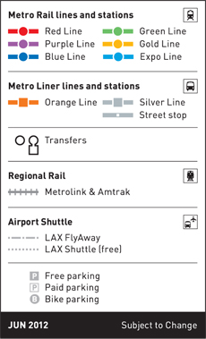

En Español | Click on any of the stations to get information on connecting bus lines, parking, bike lockers and nearby destinations. Last revised: Monday, January 30, 2012

 | Go Metro Map Interactive |
En Español | Click on any of the stations to get information on connecting bus lines, parking, bike lockers and nearby destinations. Last revised: Monday, January 30, 2012